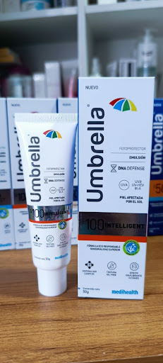
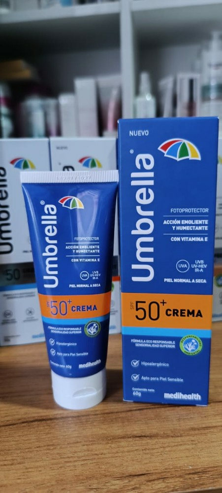
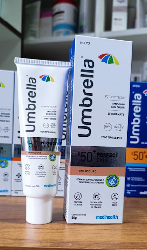
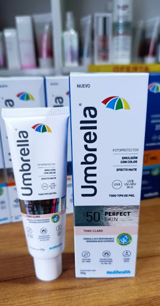
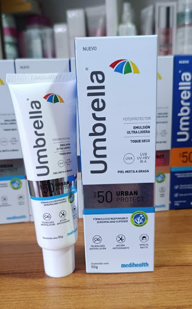
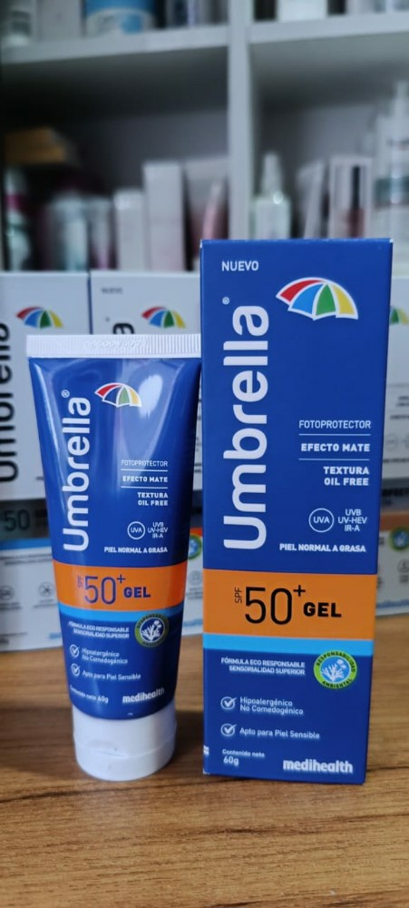

Para pieles con sensibilidad extrema y daño actínico (manchas). Acción: Reparación biológica y defensa del ADN celular. Nivel: La protección más alta de la línea.
Bs 270 Consultar por WhatsApp
Para piel normal a seca. Ideal para personas que sienten la piel tirante o deshidratada. Contiene Vitamina E, que actúa como antioxidante mientras los agentes emolientes suavizan la textura de la piel. Bs 270 Consultar por WhatsApp

Para pieles con fototipos oscuros que buscan unificar el tono sin usar una base de maquillaje pesada. Protección diaria para todo tipo de piel que requiere control de brillo (mate) y cobertura de imperfecciones con un acabado natural. Bs 270 Consultar por WhatsApp

Para pieles con fototipos claros. Protege contra la radiación UV e infrarroja mientras ofrece una cobertura ligera para uniformar el rostro sin dejar sensación grasa. Bs 270 Consultar por WhatsApp

Para pieles mixta a grasa y personas que viven en ciudades con alta contaminación. Es de "toque seco". Además de los filtros solares, incluye activos antioxidantes que bloquean los metales pesados y el smog del ambiente, evitando el envejecimiento prematuro por polución. Bs 270 Consultar por WhatsApp

Para piel normal a grasa o con tendencia al acné. Al ser un gel "Oil Free" (libre de grasas) y no comedogénico, es el producto estándar para quienes odian la sensación pegajosa. Deja un acabado mate y es muy resistente al sudor. Bs 270 Consultar por WhatsApp